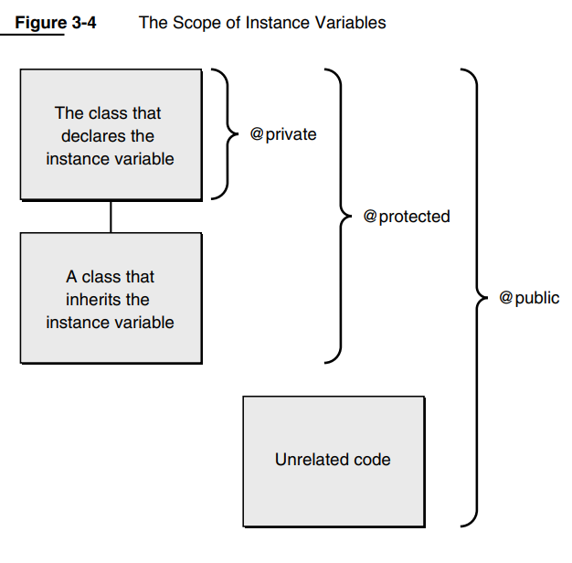

The Objective-C Programming Language
这个文档其实不怎么长，一共五个章，前两章是介绍，中间三章围绕语言、运行时、运行时函数展开。后面附录里的两章是总结和语法。
学这个主要是想能看懂.mm 代码在干啥。另外了解了一下，Swift 和 Objective-C 可以互相调用，通过桥接头文件。
抽象。
这里提到 method 这个概念：
For example, in C++ methods are called “member functions” and instance variables are “data members.” This book uses the terminology of Objective-C, which has its basis in Smalltalk.
message 是对象之间用来通讯的载体，一种交互方式。
Every instance is characterized by its access to the methods defined for the class.
抽象：封装和多态
运行时再检查类型。
动态绑定就是运行时（runtime）决定用哪个调用：delaying the decision of exactly which method to perform until the program is running.
Dynamic binding is routine in Objective-C. You don’t need to arrange for it specially, so your design never needs to bother with what’s being done when.
在 Objective-C 中，动态绑定是一种核心特性，允许方法调用在运行时决定具体的实现。
Apple’s compilers are based on the compilers of the GNU Compiler Collection. Objective-C syntax is a superset of GNU C/C++ syntax, and the Objective-C compiler works for C, C++ and Objective-C source code. The compiler recognizes Objective-C source files by the filename extension .m, just as it recognizes files containing only standard C syntax by filename extension .c. Similarly, the compiler recognizes C++ files that use Objective-C by the extension .mm.
To get an object to do something, you send it a message telling it to apply a method. In Objective-C, message expressions are enclosed in square brackets:
[receiver message]
message: In source code, the message is simply the name of a method and any arguments that are passed to it.
[receiver message] // [object method]
[myRect display]; // object: myRect, method: display告诉myRect执行display
// take arguments
[myRect setOrigin:30.0 :50.0];
[myRect setWidth:10.0 height:15.0];
// variable number of arguments
[receiver makeGroup:group, memberOne, memberTwo, memberThree];
与传统的函数调用不同，message 消息发送更接近于动态语言的调用方式。消息发送时，运行时会在对象的类中查找对应的方法实现。
我理解这两个东西：method 和 message 就是函数和函数调用，只不过 message 是基于运行时的。
A method has automatic access to the receiving object’s instance variables. You don’t need to pass them to the method as arguments.
The method name in a message thus serves to “select” a method implementation. For this reason, method names in messages are often referred to as selectors.
这句话的意思是，方法名（method name）在消息（message）中用来“选择”一个方法的实现。因此，方法名在消息中通常被称为选择器（selector）。在面向对象编程中，尤其是像 Objective-C 这样的语言中，选择器（selector）指的就是方法名。每个方法名可以被视为一个标识符，用来选择具体的实现。当一个对象接收到一个消息时，它会使用这个消息中的选择器来确定哪个方法需要被调用。因此，选择器基本上就是方法名。
NSObject being a root class, doesn’t have a superclass.
所有类的基础，提供对象和运行时能力。
Although a class object keeps the prototype of a class instance, it’s not an instance itself. It has no instance variables of its own and it can’t perform methods intended for instances of the class. However, a class definition can include methods intended specifically for the class object—class methods as opposed to instance methods. A class object inherits class methods from the classes above it in the hierarchy, just as instances inherit instance methods.
类方法和实例方法：类方法不需要实例。我理解类似于 C++ 类的 static 函数
This code tells the Rectangle class to create a new Rectangle instance and assign it to the myRect variable:
id myRect;
myRect = [Rectangle alloc]
动态分配内存。下面的是在分配内存之后初始化，是个比较常用的写法
myRect = [[Rectangle alloc] init];
定义类：用 interface 和 implementation
@interface开始@end结束
@interface ClassName : ItsSuperclass
{
instance variable declarations
}
method declarations
@end
float width;
float height;
BOOL filled;
NSColor *fillColor;
+ alloc;
- (void)display;
这里面有个 trick
Although it’s not a common practice, you can define a class method and an instance method with the same name. A method can also have the same name as an instance variable. This is more common, especially if the method returns the value in the variable. For example, Circle has a radius method that could match a radius instance variable.
- (float)radius;
- (void)setRadius:(float)aRadius;
这里要注意下返回值和参数的默认类型：
If a return or argument type isn’t explicitly declared, it’s assumed to be the default type for methods and messages—an id. The alloc method illustrated above returns id.
- (void)setWidth:(float)width height:(float)height;
@implementation开始@end结束
@interface ClassName : ItsSuperclass
{
instance variable declarations
}
method declarations
@end
Methods for a class are defined, like C functions, within a pair of braces. Before the braces, they’re declared in the same manner as in the interface file, but without the semicolon. For example:
+ alloc
{
. . .
}
- (BOOL)isfilled
{
. . .
}
- (void)setFilled:(BOOL)flag
{
. . .
}
变长参数：
- getGroup:group, ...
{
va_list ap;
va_start(ap, group);
. . .
}
方法名的每个部分必须用冒号 : 来标记，并且每个冒号后面应该紧接着参数类型和参数名。
引用 Instance Variables。假设这个 receiver 有个变量叫 filled：
- (void)setFilled:(BOOL)flag
{
filled = flag;
. . .
}

private/protected/public，instance variables 的作用范围：
private：自己
protected：自己和继承的类
public：任意
和其他面向对象语言一样的。
In Objective-C, messages aren’t bound to method implementations until runtime. The compiler converts a message expression,
[receiver message]
into a call on a messaging function, objc_msgSend(). This function takes the receiver and the name of the method mentioned in the message—that is, the method selector—as its two principal arguments: objc_msgSend(receiver, selector)
The @selector() directive lets Objective-C source code refer to the compiled selector, rather than to the full method name. Here the selector for setWidth:height: is assigned to the setWidthHeight variable:
SEL setWidthHeight;
setWidthHeight = @selector(setWidth:height:);
The messaging routine has access to method implementations only through selectors, so it treats all methods with the same selector alike. It discovers the return type of a method, and the data types of its arguments, from the selector. Therefore, except for messages sent to statically typed receivers, dynamic binding requires all implementations of identically named methods to have the same return type and the same argument types.
Message expressions are enclosed in square brackets:
[receiver message]
The receiver can be:
Each method implementation is passed two hidden arguments:
http://andrewd.ces.clemson.edu/courses/cpsc102/notes/ObjC.pdf